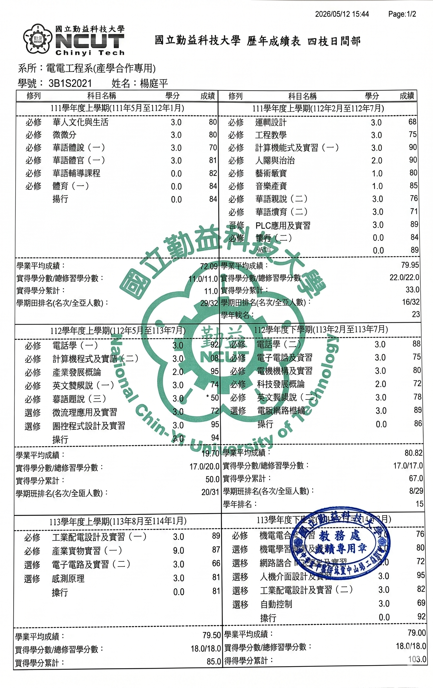

Academic Transcript
學術成績單 (Bảng điểm)
國立勤益科技大學 (NCUT)
成績單 1 (Bảng điểm 1)

[Vui lòng thêm ảnh transcript-1.jpg vào thư mục assets]'">成績單 2 (Bảng điểm 2)

為保護個人隱私，請輸入 QR Code 中提供的密碼。
國立勤益科技大學 (NCUT)

[Vui lòng thêm ảnh transcript-1.jpg vào thư mục assets]'">